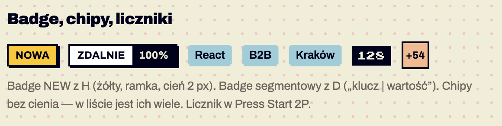

Komponenty / Badge
Badge
stabilny Badge · od 1.0
Krótka etykieta statusu przy obiekcie: „Nowa”, „Polecany”, para klucz–wartość („Zdalnie | 100%”). Nie jest klikalna. Do tagów technologii użyj chipa (K03), do liczby pozycji — licznika (K04). Potwierdzone w dokumentacji S01 §6.2.

Anatomia i komponenty składowe
| Część / rola | Wymagana / opcjonalna | Składnik / źródło | Co można zmienić / status |
|---|---|---|---|
| kontener z ramką 2 px i cieniem 2 px | wymagany | .badge | tło wg wariantu Potwierdzone w dokumentacji |
| etykieta wersalikami | wymagana | Archivo 12/700 | 1–2 słowa Rekomendacja |
| drugi segment (wartość) | opcjonalny | .badge-seg | tło --ink Potwierdzone w dokumentacji |
Warianty i zastosowanie
| Oś | Wartość | Kiedy użyć | Co się zmienia | Ograniczenia / status / źródło |
|---|---|---|---|---|
| znaczenie | neutralny | status informacyjny | tło białe | Potwierdzone w dokumentacji |
| znaczenie | nowe .badge-new | „Nowa”, „Polecany” | tło --highlight | jedyne użycie żółtego Potwierdzone w dokumentacji |
| układ | segmentowy .badge-seg | klucz | wartość | dwa pola | S04 Potwierdzone w dokumentacji |
| rozmiar | mały .badge-sm | w wierszu listy, w nazwie pakietu | 10 px, bez cienia | S10, S14 Potwierdzone w dokumentacji |
| znaczenie | status z kolorowym kwadratem | AKTYWNA / SZKIC / WYGASŁA | kwadrat 8 px przed tekstem | tylko S16 — poza systemem Szacunek z obrazu |
Zachowanie, treści i lokalizacja
Statyczny. Treść krótka; tłumaczenia dłuższe niż 2 słowa łamią układ wiersza — do sprawdzenia Do potwierdzenia.
Zalecane i niewskazane
| Zalecane — przykład | Niewskazane — przykład | Powód / status / źródło |
|---|---|---|
| jeden „Nowa” na karcie (S11) | trzy badge na jednej karcie | badge traci wagę Rekomendacja |
| „Polecany” obok nazwy pakietu (S10) | badge zasłaniający cenę | zaobserwowane i poprawione na S10 Potwierdzone w dokumentacji |
Tokeny i style
| Zastosowanie | Token | Tryb / wariant | Wartość | Źródło | Status |
|---|---|---|---|---|---|
| tło nowe | --highlight | #F7C93E | S01 | Potwierdzone w dokumentacji | |
| ramka, cień | --border, --shadow-sm | 2 px, 2 px | S01 | Potwierdzone w dokumentacji | |
| segment wartości | --ink / --on-ink | #00021C / #F0EDD8 | S01 | Potwierdzone w dokumentacji |
Wymiary, odległości i układ
| Elementy / krawędzie | Wariant | Wartość / relacja | Token | Reguła / źródło / dokładność |
|---|---|---|---|---|
| padding | domyślny | 5×8 px | — | Potwierdzone w dokumentacji |
| padding | sm | 3×6 px | — | Potwierdzone w dokumentacji |
Typografia
| Rola tekstu | Styl | Font / weight | Rozmiar | Interlinia | Tracking | Kolor / zachowanie / status |
|---|---|---|---|---|---|---|
| etykieta | label | Archivo 700 | 12 px (sm 10 px) | 1 | +0.3px | wersaliki, --ink Potwierdzone w dokumentacji |
Przykład na żywo
Ta sama sekcja co w examples/komponenty.html — działa na systemie 1.11.0. Przełącz motyw w nagłówku, żeby zobaczyć tryb ciemny.
Badge, chip, licznik, awatar, pakiet
Rzadkość i pakiet zawsze jako .tier-tag — kolor zawsze z nazwą.
Kod przykładu
<section class="ex" aria-labelledby="h-lab">
<h2 id="h-lab">Badge, chip, licznik, awatar, pakiet</h2>
<p>Rzadkość i pakiet zawsze jako <code>.tier-tag</code> — kolor zawsze z nazwą.</p>
<div class="row">
<span class="badge badge-new">Nowa</span>
<span class="badge">Polecany</span>
<span class="badge badge-seg"><span>Zdalnie</span><span>100%</span></span>
<span class="badge badge-sm">Nowa</span>
<span class="chip">React</span><span class="chip">Unity</span><span class="chip-more">+3</span>
<span class="count">1 128</span>
<span class="avatar" style="--av:var(--avatar-1)" aria-hidden="true">PF</span>
<span class="avatar avatar-xl" style="--av:var(--avatar-4)" aria-hidden="true">ŁŻ</span>
<span class="tier-tag tier-legendary">Legendarny</span><span class="tier-tag tier-epic">Epicki</span><span class="tier-tag tier-rare">Rzadki</span><span class="tier-tag tier-common">Zwykły</span>
</div>
</section>Właściwości i atrybuty
| Właściwość / atrybut | Typ | Wartości pokazane / opisane | Domyślna | Efekt i zastosowanie | Zależności / status / źródło |
|---|---|---|---|---|---|
| wariant | enum | neutralny, new, seg, sm | — | — | Potwierdzone w dokumentacji |
| tekst | tekst | Nowa, Polecany, Zdalnie|100% | — | — | Potwierdzone w dokumentacji |
Specyfikacja (design.md §6.2)
Prostokąt z ramką 2 px i cieniem 2 px, etykieta label (12/700, wersaliki).
| Wariant | Wygląd | Użycie | ||
|---|---|---|---|---|
.badge | biały | status neutralny | ||
.badge-new | --highlight | „Nowa”, „Promo” | ||
.badge-sm | 10 px, bez cienia | w wierszu listy, wyrównany do prawej | ||
.badge-seg | dwa segmenty: jasny klucz + --ink wartość | „Zdalnie | 100%”, „Poziom | Senior” |
<span class="badge badge-new">Nowa</span>
<span class="badge badge-seg"><span>Zdalnie</span><span>100%</span></span>Cel: WCAG 2.2 AA. Statyczne materiały i testy automatyczne w Chrome nie dowodzą zgodności — miejsca oznaczone „Do testu we wdrożeniu” wymagają testu z czytnikiem ekranu (design.md §0.6).
| Obszar | Ustalenie lub wymaganie | Dowód / status | Kryterium / wzorzec | Jak sprawdzić |
|---|---|---|---|---|
| kolor | „Nowa” ma tekst, nie tylko kolor | Potwierdzone w dokumentacji | WCAG 1.4.1 Use of Color (A) | przegląd |
| kontrast | ink na #F7C93E 13.0:1 | Potwierdzone w dokumentacji | WCAG 1.4.3 (AA) | narzędzie |
Źródła
S01 §6.2; S02; S04; S10, S11, S14, S16.